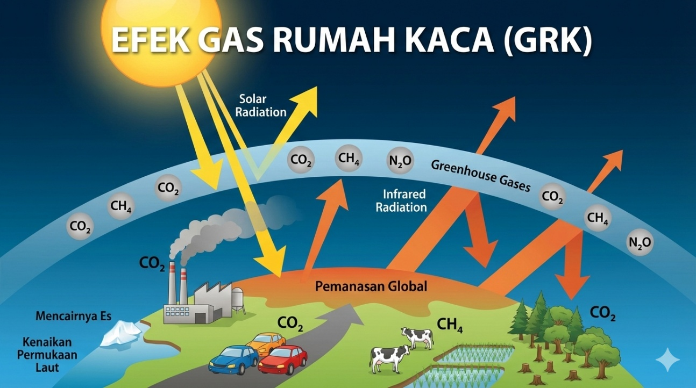

Cuaca
Kondisi atmosfer pada waktu singkat di suatu tempat, misalnya hujan sore ini, suhu panas siang hari, atau angin kencang.
01 / KENALI DASARNYA
Kenali perbedaan cuaca dan iklim, cara kerja efek rumah kaca, serta tanda-tanda perubahan iklim yang diamati dalam jangka panjang.
Jelajahi materi ↘
01 / MEMBANGUN DASAR
Perubahan iklim adalah perubahan jangka panjang pada pola suhu dan kondisi cuaca di Bumi. Perubahan dapat terlihat melalui pergeseran pola curah hujan, kenaikan suhu rata-rata, pencairan es, dan kenaikan permukaan laut.
Iklim Bumi memang dapat berubah secara alami. Namun, pemanasan global sejak era industri terutama disebabkan aktivitas manusia yang meningkatkan konsentrasi gas rumah kaca, khususnya melalui pembakaran batu bara, minyak, dan gas.
Sumber: NASA Science (2024).
BEDAKAN ISTILAH
Kondisi atmosfer pada waktu singkat di suatu tempat, misalnya hujan sore ini, suhu panas siang hari, atau angin kencang.
Pola atau kondisi rata-rata cuaca suatu wilayah dalam jangka panjang, umumnya dianalisis selama sekitar 30 tahun atau lebih.
Perubahan jangka panjang pada pola iklim, misalnya perubahan pola hujan atau peningkatan suhu rata-rata selama bertahun-tahun.
Satu hari yang sangat panas belum cukup untuk membuktikan iklim telah berubah. Penilaian perubahan iklim membutuhkan pengamatan dan analisis pola jangka panjang.
PROSES ALAM
Bumi menerima energi dari Matahari. Sebagian energi diserap permukaan Bumi, lalu dilepaskan kembali sebagai panas. Gas rumah kaca menahan sebagian panas tersebut sehingga Bumi memiliki suhu yang mendukung kehidupan.
Masalah muncul ketika konsentrasi gas rumah kaca meningkat akibat aktivitas manusia. Lebih banyak panas tertahan, sehingga sistem Bumi menghangat dan pola iklim berubah.
TANDA YANG DIAMATI
Suhu rata-rata Bumi meningkat dan gelombang panas dapat menjadi lebih intens di sejumlah wilayah.
Perubahan curah hujan dapat meningkatkan risiko kekeringan di satu wilayah dan hujan lebat di wilayah lain.
Pemuaian air laut akibat pemanasan dan pencairan es daratan berkontribusi terhadap kenaikan permukaan laut.
Sumber tanda perubahan iklim: Kompas.com (2023).
AKTIVITAS / MITOS ATAU FAKTA?
Mitos. Cuaca harian dapat berubah-ubah. Perubahan iklim dinilai dari pola jangka panjang, bukan satu hari atau satu kejadian.
Mitos. Efek rumah kaca alami penting bagi kehidupan. Yang menjadi masalah adalah peningkatan efek tersebut akibat gas rumah kaca tambahan dari aktivitas manusia.
BUKA UNTUK MEMBACA
Buka tiap kartu untuk mengulang poin penting dari materi di atas.
Cuaca menggambarkan kondisi atmosfer dalam waktu singkat, sedangkan iklim merangkum pola cuaca suatu wilayah dalam jangka panjang.
Perubahan iklim dinilai dari pola dan pengamatan jangka panjang, bukan dari satu kejadian cuaca saja.
Gas rumah kaca menahan sebagian panas. Ketika konsentrasinya meningkat, lebih banyak panas tertahan dan sistem Bumi menghangat.
AKTIVITAS INTERAKTIF
Pernyataan mana yang paling tepat menjelaskan iklim?
Pilih satu jawaban untuk melihat umpan balik.